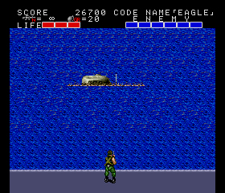
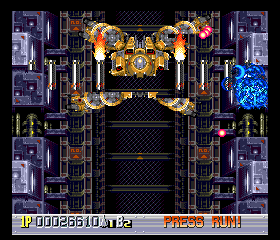
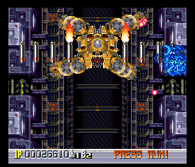

Table of Contents:
Custom palettes should contain 512 or 1024 8-bit-per-color-component RGB triplets. If only 512 triplets are present, the remaining 512 greyscale colors will be calculated automatically.
| Hotkeys | ||
|---|---|---|
| Key(s): | Action: | Setting Name: |
| ALT + SHIFT + 1 | Activate in-game input configuration process for gamepad 1. | input_config1 |
| ALT + SHIFT + 2 | Activate in-game input configuration process for gamepad 2. | input_config2 |
| ALT + SHIFT + 3 | Activate in-game input configuration process for gamepad 3. | input_config3 |
| ALT + SHIFT + 4 | Activate in-game input configuration process for gamepad 4. | input_config4 |
| ALT + SHIFT + 5 | Activate in-game input configuration process for gamepad 5. | input_config5 |
| Virtual Gamepad 1 | |
|---|---|
| Key: | Button: |
| Keypad 2 | II |
| Keypad 3 | I |
| Enter/Return | Run |
| Tab | Select |
| W | Up |
| S | Down |
| A | Left |
| D | Right |
To prevent soft resets due to accidentally hitting RUN and SEL at the same time, set pce.disable_softreset to 1. This will prevent the emulated PCE from seeing both of those buttons pressed at the same time. However, it is not guaranteed to work on all games, particularly ones with sloppily-coded gamepad polling routines.
Sprite flickering in shmups got you down? Tired of scenery having a critical existence failure in games that have complex multi-layer effects? Then the pce.nospritelimit setting is for you!
Changing this setting to a value of 1 will eliminate 99% of your flickering and existence failure woes. Side effects may include the superpower of seeing submarines through water(as in the first boss
scene of "Bloody Wolf"), along with seeing other hidden elements and graphical glitches("Ninja Ryukenden" has at least one broken cutscene with this setting enabled).
| Bloody Wolf (glitching example) | Ginga Fukei Densetsu Sapphire (improvement example) | ||
|---|---|---|---|
|  |  |  |  |
| pce.nospritelimit 0 | pce.nospritelimit 1 | pce.nospritelimit 0 | pce.nospritelimit 1 |
Many CD games have awesome music, but it is drowned out by excessively loud obnoxious sound effects. This can be partially remedied by altering the pce.cdpsgvolume and pce.adpcmvolume settings, try say a value of 50, but doing so may cause issues with cutscenes and PSG music-only sections.
Caution: Any settings that change emulation behavior as seen from the emulated game are shown with the setting name bolded in the table. One should be conscious of these settings if one has changed them from the default values when using network play or movies, as they can cause desychronizations if not set the same among hosts(or between the recording emulator and the playing emulator).
| Setting: | Value Type: | Possible Values: | Default Value: | Description: |
|---|---|---|---|---|
| pce.adpcmlp | boolean | 0 1 | 0 | Enable lowpass filter with rolloff dependent on playback-frequency. This makes ADPCM voices sound less "harsh", however, the downside is that it will cause many ADPCM sound effects to sound a bit muffled. |
| pce.adpcmvolume | integer | 0 through 200 | 100 | ADPCM volume. |
| pce.arcadecard | boolean | 0 1 | 1 | Enable Arcade Card emulation. Leaving this option enabled is recommended, unless you want to see special warning screens on ACD games, or you prefer the non-enhanced modes of ACD-enhanced SCD games. Additionally, you may want to disable it you you wish to use state rewinding with a SCD ACD-enhanced game on a slow CPU, as the extra 2MiB of RAM the Arcade Card offers is difficult to compress in real-time. |
| pce.cdbios | string | syscard3.pce | Path to the CD BIOS | |
| pce.cddavolume | integer | 0 through 200 | 100 | CD-DA volume. |
| pce.cdpsgvolume | integer | 0 through 200 | 100 | PSG volume when playing a CD game. |
| pce.disable_bram_cd | boolean | 0 1 | 0 | Disable BRAM(saved game memory) for CD games. It is intended for viewing CD games' error screens that may be different from simple BRAM full and uninitialized BRAM error screens, though it can cause the game to crash outright. |
| pce.disable_bram_hucard | boolean | 0 1 | 0 | Disable BRAM(saved game memory) for HuCard games. It is intended for changing the behavior(passwords vs save games) of some HuCard games. |
| pce.disable_softreset | boolean | 0 1 | 0 | If set, when RUN+SEL are pressed simultaneously, disable both buttons temporarily. |
| pce.forcesgx | boolean | 0 1 | 0 | Force SuperGrafx emulation. Enabling this option is not necessary to run unrecognized PCE ROM images in SuperGrafx mode, and enabling it is discouraged; ROM images with a file extension of ".sgx" will automatically enable SuperGrafx emulation. |
| pce.gecdbios | string | gecard.pce | Path to the GE CD BIOS Games Express CD Card BIOS (Unlicensed) | |
| pce.h_overscan | boolean | 0 1 | 0 | Show horizontal overscan area. |
| pce.input.multitap | boolean | 0 1 | 1 | Enable multitap(TurboTap) emulation. |
| pce.input.port1 | enum | none gamepad mouse tsushinkb | gamepad | Input device for Port 1
|
| pce.input.port2 | enum | none gamepad mouse | gamepad | Input device for Port 2
|
| pce.input.port3 | enum | none gamepad mouse | gamepad | Input device for Port 3
|
| pce.input.port4 | enum | none gamepad mouse | gamepad | Input device for Port 4
|
| pce.input.port5 | enum | none gamepad mouse | gamepad | Input device for Port 5
|
| pce.mouse_sensitivity | real | through | 0.50 | Emulated mouse sensitivity. |
| pce.nospritelimit | boolean | 0 1 | 0 | Remove 16-sprites-per-scanline hardware limit. WARNING: Enabling this option may cause undesirable graphics glitching on some games(such as "Bloody Wolf"). |
| pce.psgrevision | enum | huc6280 huc6280a enhanced match | huc6280a | Select PSG revision. WARNING: HES playback will always use the "huc6280a" revision if this setting is set to "match", since HES playback is always done with SuperGrafx emulation enabled.
|
| pce.slend | integer | 0 through 239 | 235 | Last rendered scanline. |
| pce.slstart | integer | 0 through 239 | 4 | First rendered scanline. |
| pce.vramsize | integer | 32768 through 65536 | 32768 | Size of emulated VRAM per VDC in 16-bit words. DO NOT CHANGE THIS UNLESS YOU KNOW WTF YOU ARE DOING. |
| Setting: | Value Type: | Possible Values: | Default Value: | Description: |
|---|---|---|---|---|
| pce.debugger.disfontsize | enum | small | Disassembly font size. | |
| pce.debugger.memcharenc | string | shift_jis | Character encoding for the debugger's memory editor. | |
| pce.enable | boolean | 0 1 | 1 | Enable (automatic) usage of this module. |
| pce.forcemono | boolean | 0 1 | 0 | Force monophonic sound output. |
| pce.pixshader | enum | none autoip autoipsharper scale2x ipsharper ipxnoty ipynotx ipxnotysharper ipynotxsharper | none | Enable specified OpenGL pixel shader. Obviously, this will only work with the OpenGL "video.driver" setting, and only on cards and OpenGL implementations that support pixel shaders, otherwise you will get a black screen, or Mednafen may display an error message when starting up. Bilinear interpolation is disabled with pixel shaders, and any interpolation, if present, will be noted in the description of each pixel shader.
|
| pce.scanlines | integer | 0 through 100 | 0 | Enable scanlines with specified opacity. Opacity is specified in %; IE a value of "100" will give entirely black scanlines. |
| pce.special | enum | none hq2x hq3x hq4x scale2x scale3x scale4x 2xsai super2xsai supereagle nn2x nn3x nn4x nny2x nny3x nny4x | none | Enable specified special video scaler. The destination rectangle is NOT altered by this setting, so if you have xscale and yscale set to "2", and try to use a 3x scaling filter like hq3x, the image is not going to look that great. The nearest-neighbor scalers are intended for use with bilinear interpolation enabled, at high resolutions(such as 1280x1024; nn2x(or nny2x) + bilinear interpolation + fullscreen stretching at this resolution looks quite nice).
|
| pce.stretch | enum | 0 full aspect aspect_int aspect_mult2 | aspect_mult2 | Stretch to fill screen.
|
| pce.tblur | boolean | 0 1 | 0 | Enable video temporal blur(50/50 previous/current frame by default). |
| pce.tblur.accum | boolean | 0 1 | 0 | Accumulate color data rather than discarding it. |
| pce.tblur.accum.amount | real | 0 through 100 | 50 | Blur amount in accumulation mode, specified in percentage of accumulation buffer to mix with the current frame. |
| pce.videoip | enum | 0 1 x y | 1 | Enable (bi)linear interpolation.
|
| pce.xres | integer | 0 through 65536 | 0 | Full-screen horizontal resolution. A value of "0" will cause the desktop horizontal resolution to be used. |
| pce.xscale | real | 0.01 through 256 | 3.000000 | Scaling factor for the X axis. |
| pce.xscalefs | real | 0.01 through 256 | 1.000000 | Scaling factor for the X axis in fullscreen mode. For this settings to have any effect, the " |
| pce.yres | integer | 0 through 65536 | 0 | Full-screen vertical resolution. A value of "0" will cause the desktop vertical resolution to be used. |
| pce.yscale | real | 0.01 through 256 | 3.000000 | Scaling factor for the Y axis. |
| pce.yscalefs | real | 0.01 through 256 | 1.000000 | Scaling factor for the Y axis in fullscreen mode. For this settings to have any effect, the " |